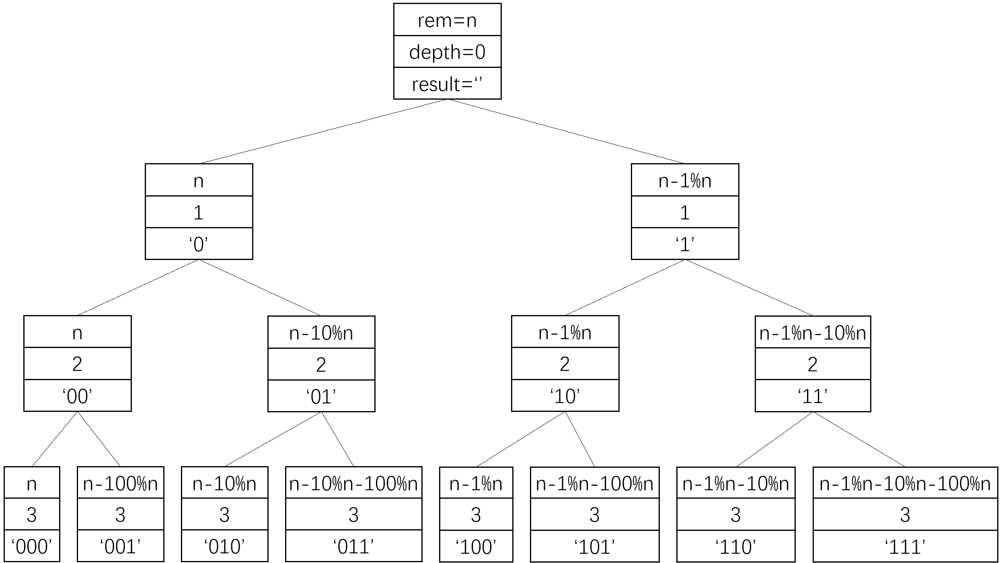

POJ1426 - Find The Multiple
文章目录
链接：https://vjudge.net/problem/POJ-1426
Task
Given a positive integer n, write a program to find out a nonzero multiple m of n whose decimal representation contains only the digits 0 and 1. You may assume that n is not greater than 200 and there is a corresponding m containing no more than 100 decimal digits.
Input
The input file may contain multiple test cases. Each line contains a value of n (1 <= n <= 200). A line containing a zero terminates the input.
Output
For each value of n in the input print a line containing the corresponding value of m. The decimal representation of m must not contain more than 100 digits. If there are multiple solutions for a given value of n, any one of them is acceptable.
Sample
input:
|
|
output:
|
|
Solution
本题很多人上来就用unsigned long long来表示最终结果来BFS，虽然本题测试样例很简单导致结果不会超出ull的范围（18位十进制数），但本文假设了结果最多是100位十进制数，远远超出了ull的范围，最好另找正经解法。 最简单的思路，可在节点中存储0/1字符串来表示大数，再存储一个整型余数。这是一个二叉树的BFS，左右子节点分别对应字符串末尾加0或1。但因为一层节点太多，都放进队列时会memory limit和time limit交替进行。此法不妥。
1、为了缩短计算时间，首先认识到：结果由0和1组成，可以写为10的幂之和，即
\begin{equation}
\left(\sum_{<i>}10^i\right)\%n=0 \quad
\Rightarrow \quad
\left(\sum_{<i>}(10^i\%n)\right)\%n=0
\end{equation}所以可用数组存储10的各次幂对n的余数，需要时直接查找，不用计算。这个数组可由一次递归求出，即已知x%n，可求(x*10)%n：
\begin{equation}
(x\cdot 10)\%n=\left((x\%n)\cdot(10\%n)\right)\%n
\end{equation}因此可由1%n得到所有10的幂的余数，它们组成一个序列rmd_pow10，长度最大为最长位数MAX_LEN_RMD=100。
2、为了缩小搜索空间，需要从低位往高位搜索。如果从低到高搜，搜过两个数x和y，它们对n同余，则x和y对应的子树在同余上是是等价的，在x前面放任意0/1序列，在y前面放同样的0/1序列，得到的结果对n仍同余。即
\begin{equation}
x\%n=y\%n \quad
\Rightarrow \quad
\forall z:(z\cdot x)\%n=(z\cdot y)\%n
\end{equation}因此对每个节点存储一个余数，如果搜索其他节点时碰到同样余数，就可以认为两个节点的子树等价，因此不需要再搜索这个新节点了，大幅减小搜索空间。因此可做一个bool型序列visited，标记一个余数有没有被访问过。该序列位置编码余数，对应位置为1表示已经被访问过。最大长度为n的最大值MAX_LEN_VISIT=200。
如图所示（每个节点的第一个元素不准确，应该还要变换到[1,n]），由于是从低位开始遍历，故节点中存储的字符串要反过来才是结果。每个节点的左子节点和自己相同，因为只是在最前面加了个0。也因为这个原因，左子节点不能像上面说的那样按照重复子树处理，否则递归不能继续。而左子节点一定不会是最终结果，因为是0开头的数字。 右子节点才是真正有可能产生最终结果的，而且可以按照重复子树优化掉很多。 例如，n=7时，‘01’的子树和‘101’的子树是重复的，因为10%7=101%7=3，所以两者在头部加上任何数，对7的模都是相同的。可认为‘101’的子树重复。 
|
|